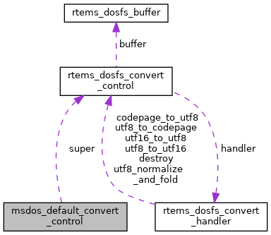

|
RTEMS
5.0.0
|
|
RTEMS
5.0.0
|

Data Fields | |
| rtems_dosfs_convert_control | super |
| uint8_t | buffer [MSDOS_NAME_MAX_LFN_BYTES] |
Definition at line 171 of file msdos_conv_default.c.
| uint8_t msdos_default_convert_control::buffer[MSDOS_NAME_MAX_LFN_BYTES] |
Definition at line 173 of file msdos_conv_default.c.
| rtems_dosfs_convert_control msdos_default_convert_control::super |
Definition at line 172 of file msdos_conv_default.c.
 1.8.17
1.8.17